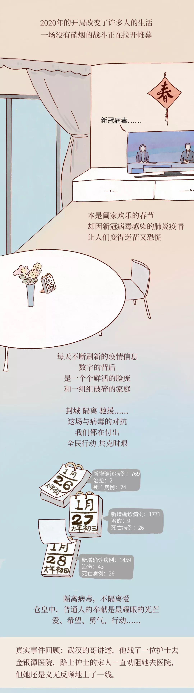
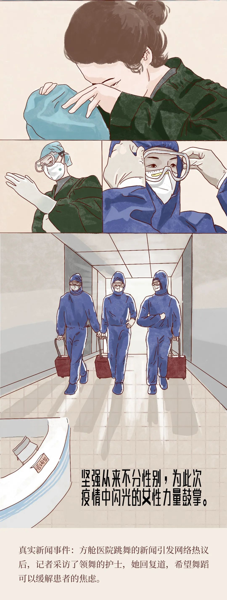
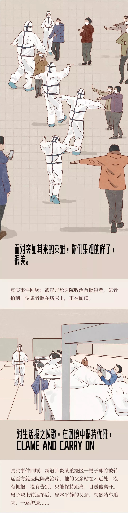
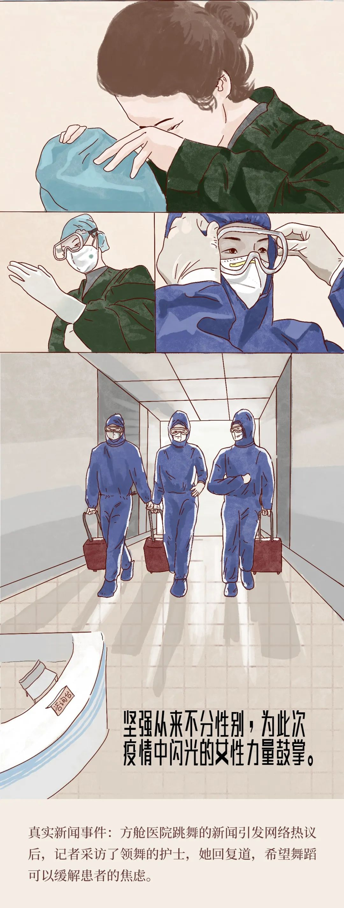
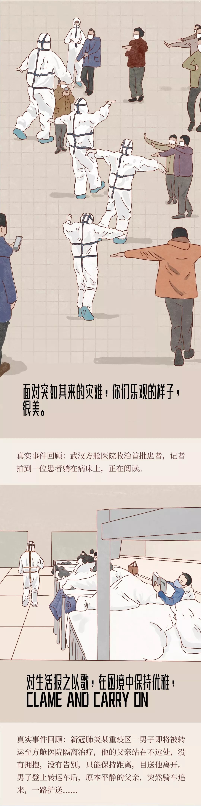
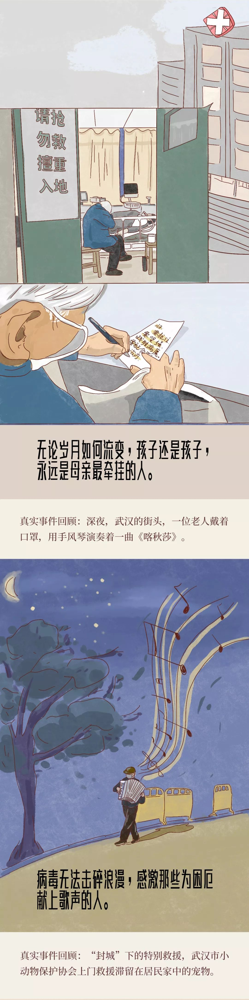
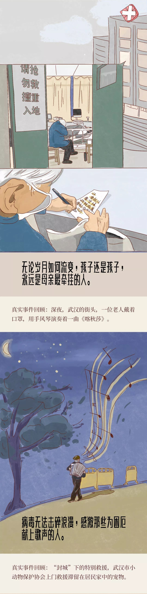

回家后，你们都离我远一点
原文链接 备份链接 “ - 疫 情 之 下 - 外面没有好消息，我们市里有两例确诊了，他们都是从武汉回来！我不敢把任何不好的消息告诉爸爸，怕他心理负担重。 ” 1 2020年1月18日，公司年会，这一天大家跟往年一样——总结，去食堂吃午 …
以下文章来源于松果生活 ，作者☞
[
松果生活
松果是由《三联生活周刊》打造的一个精致生活方式聚合平台。汇聚各式达人，精选阅读内容，发起线下活动。](#)

 
 


春暖花开我们再拥抱春暖花开我们再拥抱春暖花开我们再拥抱春暖花开我们再拥抱春暖花开我们再拥抱春暖花开我们再拥抱春暖花开我们再拥抱春暖花开我们再拥抱春暖花开我们再拥抱春暖花开我们再拥抱春暖花开我们再拥抱春暖花开我们再拥抱春暖花开我们再拥抱春暖花开我们再拥抱春暖花开我们再拥抱春暖花开我们再拥抱春暖花开我们再拥抱春暖花开我们再拥抱春暖花开我们再拥抱春暖花开我们再拥抱春暖花开我们再拥抱春暖花开我们再拥抱春暖花开我们再拥抱春暖花开我们再拥抱春暖花开我们再拥抱春暖花开我们再拥抱春暖花开我们再拥抱春暖花开我们再拥抱
监制 ✎ 领导
漫画 ✎ 不红艺术家吴欢欢
文案 ✎ Dora、傻狍子、理多多

关 / 注 / 松 / 果 拯 / 救 / 无 / 聊
人文 · 艺术 · 生活

Contact us
商业合作/投稿发送邮件
songguolife@lifeweek.com.cn
原文链接 备份链接 “ - 疫 情 之 下 - 外面没有好消息，我们市里有两例确诊了，他们都是从武汉回来！我不敢把任何不好的消息告诉爸爸，怕他心理负担重。 ” 1 2020年1月18日，公司年会，这一天大家跟往年一样——总结，去食堂吃午 …
原文链接 备份链接 所有的鱼现在同步在 allthefishnews.wordpress.com 更新并可通过邮件订阅。你可以复制上方链接浏览器打开获取订阅链接。 *点击 阅读原文 可查看昨天的推送 根据丁香医生实时数据，截至 2 …
原文链接 备份链接 “ - 疫 情 之 下 - 武汉的疫情就像一簇紧簇的乌云，笼罩在每一个人的心头。但所幸，在这个受伤的城市中，在每台志愿者车里，在疲于奔波的路上，总有那么一群可爱的人，温暖着我们前线医护工作者的心。 ” 1 2020年 …
原文链接 备份链接 “ - 疫 情 之 下 - 父亲作为一家之主，把家里卖粮食的一万多块钱当做货款结给了供应商，按照他交代给我们的原话：“咱们已经吃亏了，就不要再让别人吃亏了，也让人家回家好好过个年。” ” …
原文链接 备份链接 “ - 疫 情 之 下 - 看到爸爸如此坚强的内心和乐观的心理状态，我也充满了信心。 ” 故 事 练 习 生 习 作 第 58 篇 1月20日晚间，钟南山院士对“新型肺炎人传人”的一句肯定，让全国各地陷入对病毒 …